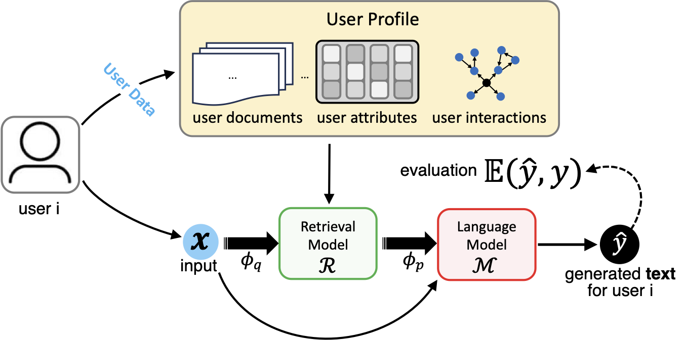

Personalized Graph-based Retrieval for LLMs
As large language models (LLMs) evolve, their ability to deliver personalized and context-aware responses offers transformative potential for improving user experiences. Existing personalization approaches, however, often rely solely on user history to augment the prompt, limiting their effectiveness in generating tailored outputs, especially in cold-start scenarios with sparse data. To address these limitations, we propose Personalized Graph-based Retrieval-Augmented Generation (PGraphRAG), a framework that leverages user-centric knowledge graphs to enrich personalization. By directly integrating structured user knowledge into the retrieval process and augmenting prompts with user-relevant context, PGraphRAG enhances contextual understanding and output quality. We also introduce the Personalized Graph-based Benchmark for Text Generation, designed to evaluate personalized text generation tasks in real-world settings where user history is sparse or unavailable. Experimental results show that PGraphRAG significantly outperforms state-of-the-art personalization methods across diverse tasks, demonstrating the unique advantages of graph-based retrieval for personalization.

@article{pgraphrag,
title={Personalized Graph-Based Retrieval for Large Language Models},
author={S. Au, C.J. Dimacali, O. Pedirappagari, N. Park, F. Dernoncourt, Y. Wang, N. Kanakaris, H. Deilamsalehy, R.A. Rossi, N.K. Ahmed},
year={2025},
eprint={2501.02157},
archivePrefix={arXiv},
primaryClass={cs.CL},
url={https://arxiv.org/abs/2501.02157}
}